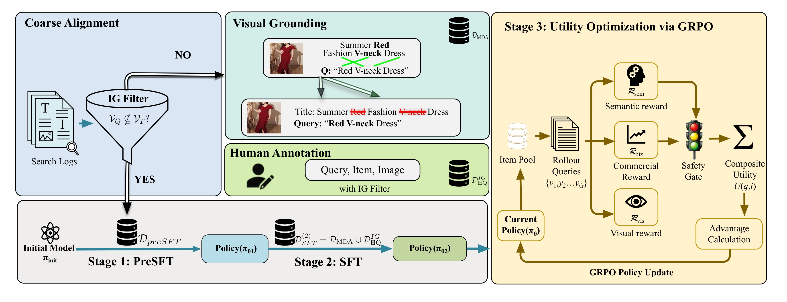
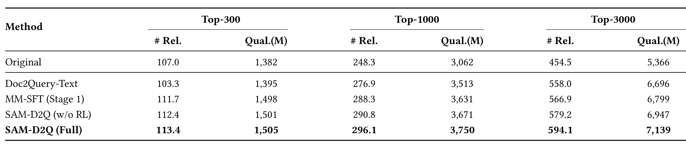
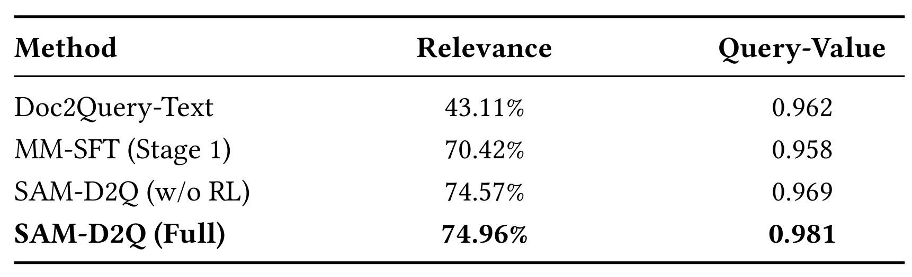
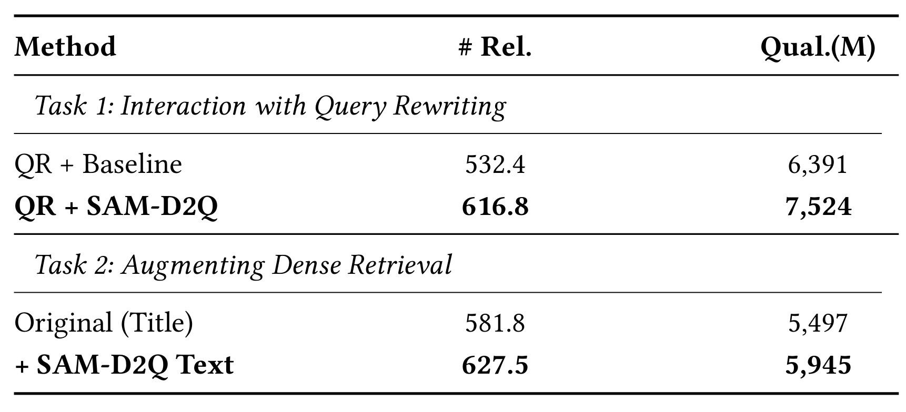
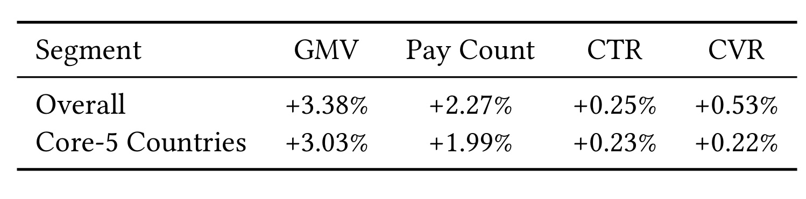

SAM-D2Q：让商品扩展词同时服务召回、视觉依据和商业价值
论文：SAM-D2Q: Aligning Multimodal Doc2Query with Search Demand and Conversion for E-commerce。作者：Hui Zhou、Jian Hui Ji、Lei Ma、Rong Xiao、Xiaoyi Zeng。机构：Alibaba International Digital Commerce Group。公开日期：2026-09-04；精读日期：2026-09-07。规范入口：arXiv:2609.04961。原始 PDF 共 8 页，署有 CIKM 2026 会议信息；本文独立代码或项目页本轮未核验到。
这篇工业搜索论文把商品侧生成式扩展放回倒排召回的具体约束中：模型生成的句子不仅要像查询，还必须补充原商品文本没有的有效词。全文值得关注的是训练样本的分流方式、视觉监督的构造，以及奖励与最终业务实验之间的证据距离。
电商商品标题短且不完整，无法覆盖用户的多样表达和图片中的关键属性；纯文本 Doc2Query 容易遗漏视觉信息，产生语义上合理却缺乏商业价值的扩展，而重复标题已有词又不能带来布尔召回增益。
1. 背景和问题
1.1 从标题匹配到有效的商品扩展
作者讨论的是搜索链路中的商品侧稀疏召回。用户先提交查询，系统完成查询理解、候选召回和排序；商品标题进入倒排索引，命中哪些词直接影响商品能否进入后续排序。这里即使排序器非常强，只要目标商品没有被召回，它就没有被排序器纠正的机会。商家写标题时往往强调商品名称、促销词或有限的规格，用户却可能围绕颜色、袖型、场合和风格搜索，双方表达不同构成词汇错配。论文并没有声称稀疏检索取代所有神经召回，而是指出在其工业系统里，倒排匹配仍承担精确品牌、型号和低延迟候选覆盖的重要角色。
Doc2Query 的基本做法是为每件商品离线生成若干可能的用户查询，再把生成词补到商品侧索引中。它把查询时刻的理解成本前移到离线阶段，因此适合大库存系统：一次生成可以服务后续很多查询。对本文来说，输入既有商品文本，也有商品图片，输出仍然是可被现有倒排系统消费的文本。这个接口非常关键，因为它使多模态模型的能力可以嵌入成熟的搜索基础设施，线上无需在每个用户请求上调用多模态大模型。但前移成本不代表成本消失，离线生成吞吐、商品更新、词过滤和新增索引空间都成为方案是否可落地的一部分。
本文与常见网页文档扩展的差异来自布尔匹配。在某些概率排序模型中，重复词可能改变词频权重；在作者的布尔召回语境下，一个词对商品的存在性是零或一，标题已经包含的词再出现一百次也不创造新的匹配关系。于是，生成一条通顺查询和生成一条有新增召回价值的查询不是同一个目标。模型从点击日志中学习时，很容易抽取标题中的词组成目标查询，训练损失下降得很快，索引却只得到原有信息的另一种排列。这里的信息增益是词集合上的新增覆盖条件，并非信息论熵或互信息的数值估计，不能把它读成一种新提出的互信息优化算法。
1.2 视觉信息与商业信号分别补什么
第一个缺口是语义覆盖。论文举出的服装场景容易理解：过短的衬衫标题可能不说明袖长、颜色或图案，但图片中可以看到这些属性。只读标题的生成模型可能输出一些泛化的服装词，也可能凭常见搭配臆造材质或风格。引入视觉语言模型给出了额外信息源，却没有保证模型真的使用图片。如果训练目标原本全部出现在文本里，模型仍然可以沿着复制文本的捷径完成任务。第二阶段的数据构造因此不是单纯增加图片数量，而是主动移走部分文本证据，保留图片和查询目标，改变模型完成训练任务所需的证据结构。
第二个缺口是商业需求。两个同样相关的词，可能分别对应高频真实搜索和少人使用的表达，转化潜力也可能不同。作者用搜索页浏览量及付费转化信号构造词价值，希望生成器在语义可接受的空间中选择更有业务价值的新增词。这种目标有清楚的工业动机，但需要保留约束：历史流量不是商品真实属性，热门词也不自动适合每件商品。如果仅追逐业务分数，模型可能向大量商品附加高需求词，扩大无关召回。因此论文同时设计语义奖励、视觉属性奖励和有效性门控，以防商业目标压过相关性。
第三个问题是监督数据如何分工。原始日志中，查询已被标题覆盖的样本对布尔增量召回帮助有限，却可能具有很强的相关性证据。作者没有把这部分数据全部丢掉，而是把它们留给视觉反事实构造。查询不被标题完全覆盖的样本进入第一阶段，先学习扩展；查询原本被覆盖但包含可视觉识别属性的样本，经文本屏蔽后进入第二阶段。这种分流使同一条“无新增词”日志在不同训练条件下拥有不同用途，贡献点更多在数据与任务的匹配，而不是重新发明一个视觉语言骨干。
读这类论文还需要区分三个评估层级。生成层回答输出查询是否相关、词商业分数是否高；召回层回答在固定库存和候选截断下能找到多少相关商品；线上层回答用户在完整检索排序系统中是否产生更多支付和成交。层级之间有关联，但不能直接画等号。更高的查询奖励可能只是对训练目标更适配，更多候选商品还要经过排序和展示竞争，最终成交又受价格、库存、活动等因素影响。本文既提供离线组件对照，也给出线上增量实验，优于只汇报奖励分数；不过原文存在训练日志晚于所述线上测试的时间冲突，后文会把它作为版本映射缺口单独说明。
从推荐与广告研究视角，最容易借鉴的是“新增表示必须改变下游可用信息”这一判断标准。商品扩展并不因为生成文字多就更有价值，必须看新词是否改变召回边界、是否有真实商品证据、是否在后续链路保留下来。对多模态 LLM 研究，本文提供的是一种任务约束驱动的数据课程，而不是通用视觉推理能力的全面证明。它的输入、奖励和评估都围绕电商语境，迁移到其他内容领域时，需要重新检查属性知识库、流量口径与安全门控，不能只替换提示词后沿用原有收益预期。
另一个有用的阅读边界是区分商家文本不足和用户意图不明确。本文主要补充商品侧缺失表达，并没有让生成器在用户发起搜索时追问意图，也没有重新设计排序的多目标权衡。商品图片可以帮助补上短袖、花纹等属性，却不能独立决定用户到底偏好低价还是高端品牌。对倒排链路来说，扩展词负责让合理候选获得入场机会，查询理解与后续排序仍负责更细的约束。这也解释了作者为何选择增量接入现有生产栈，而把查询改写系统作为兼容性实验对象。
2. 方法
2.1 信息增益约束与日志分流
整条训练链以 Qwen3-VL-8B 为多模态生成骨干，输入商品文本和图片，输出可能的用户查询。第一阶段先对点击日志做词集合过滤，使目标查询至少包含一个商品文本没有的词；第二阶段接收反事实视觉样本和人工高质量样本；第三阶段从已经具备扩展与视觉对齐能力的策略出发，用搜索效用奖励做 GRPO。原文 Figure 1 把数据去向、模型参数的阶段转换和最终奖励闭环连在一起。

图中左侧搜索日志通过信息增益过滤器分成两路：满足新增词要求的日志向下训练第一阶段策略，不满足的日志向右进入视觉增强模块。中间上方示例把商品文本里的视觉属性移除，但保留商品图片和原查询；中间下方再加入经过信息增益过滤的人工标注对，两类数据共同训练第二阶段。图底部连接的是同一生成模型的连续参数更新，而非三个线上串联推理模型。右侧则从商品池抽取上下文，由当前策略产生一组查询，再分别计算语义、商业和视觉分数，通过门控得到复合效用，以组内相对优势更新策略。理解这条信息流，可以避免把“反事实增强”和“奖励模型”误看成线上召回必须执行的额外模块。
这张图还揭示两个不能混淆的约束层次。左侧训练数据过滤决定模型看到什么目标，右侧门控决定探索出的候选是否有资格获得奖励；前者不能替代后者，因为生成模型可能在新商品上输出重复词或无关词。中间人工标注支路也不能被省略为“只做遮挡训练”，否则会遗漏作者为保持高质量相关性监督所加入的第二种来源。图中的公式与正文定义应以正文为准，特别是信息增益条件是查询词集合不被标题词集合完全包含，不要求查询集合严格包含整个标题集合。作者把训练课程拆成三个阶段，正是为了先建立可用生成分布，再用业务信号改变其中的偏好；直接对原始日志追商业奖励的稳定性没有在本文中被证明。
第一阶段的关键筛选规则可写为：
符号解释：$T$ 为商品文本，$I$ 为图片，$Q$ 为点击日志中的查询，$\mathcal D$ 是原始日志集合，$V_Q$ 和 $V_T$ 分别是去重后的查询词集合与文本词集合。条件只要求至少一个新词，不要求全部查询词都新，也不保证新词一定正确。保留样本后仍用监督似然训练生成策略；原文得到约九百万有效样本。该规则减少“把标题抄成查询”的训练捷径，但日志点击噪声与分词口径仍会影响筛选，论文没有给出跨语言分词细节及所有噪声处理规则。
2.2 反事实视觉增强与混合监督
第二阶段从原本满足查询被文本完全覆盖的样本开始。平台 Category-Property-Value 知识库告诉系统哪些属性值具有视觉含义，例如颜色、图案、领型和袖型。如果查询包含这些属性值，就将它们从文本中屏蔽，保持图片及原查询不变，再检查屏蔽后是否出现信息增益。这个“反事实”是对输入文本的受控编辑，不是对真实用户或商品做因果实验。它改变了训练时可用的线索，希望模型通过图片恢复被拿走的信息，而不是说明模型学到了可被严格识别的因果关系。
符号解释：$V_{\mathrm{visual}}$ 是 CPV 定义的视觉属性值集合，交集选出查询里需要屏蔽的视觉词，$T_{\mathrm{cf}}$ 是编辑后的文本。$\mathcal D_{\mathrm{MDA}}$ 收集屏蔽前可复制、屏蔽后不能完全复制的样本。训练最大化 $\log\pi_\theta(Q\mid T_{\mathrm{cf}},I)$，目标仍是原查询。原文合成五十万高质量反事实样本；这不是第二阶段总训练量，因为还有另一条人工监督支路。
符号解释：$\mathcal D_{\mathrm{HQ}}$ 表示人工高质量查询商品对，IG 上标表示同样做了信息增益过滤，并集是第二阶段混合语料。人工样本增强可靠相关性，反事实样本增强对视觉属性的依赖，两者服务的目标不同。两阶段 SFT 各训练一个 epoch，学习率均为 $2\times10^{-5}$。反事实样本数明确，而人工高质量支路规模及混合权重未完整公开，因此复现时不能默认各占一半。某些材质并不总能由图片可靠辨识，知识库标成视觉属性也不等于任何商品图都包含充分证据，这仍要由相关性审核兜底。
2.3 用新增词商业效用做 GRPO
第三阶段将一次查询生成看作有奖励的采样行为。首先通过门控判断查询相关性和新增词有效性，再把三种分数组合起来：
符号解释：$q$ 是生成查询，$i$ 是商品，$I_{\mathrm{gate}}$ 为零一有效性门控，$\lambda_1,\lambda_2,\lambda_3$ 为奖励权重。$f_{\mathrm{rel}}$ 是以三百五十万人工标注对训练的 Qwen3-VL 相关性模型，读取查询、文本和图片。门控失败时整体奖励归零，使热门但不相关的词不能单凭商业分数获利。原文未给出全部阈值和权重，因此这套结构是可理解的，但还不是逐超参可复现的完整配方。
商业奖励先在词与类目粒度估计历史价值。直接用浏览量乘转化率会对稀疏词不稳定，作者引入类目平均转化率做贝叶斯平滑，再融合全局估计：
符号解释：$t$ 是词，$c$ 是类目，$PV$ 是搜索浏览量，$PAY$ 为付费转化次数，$\bar\mu_{\mathrm{cvr},c}$ 是类目平均 CVR，$\alpha$ 控制先验强度。低流量词的估计更多回退到类目均值，高流量词更接近自身付费率。该得分以历史需求为基础，并非生成某个词后新增支付的无偏因果估计；曝光分配和流行度会进入统计，因此“高商业分”应理解为历史潜力代理。
符号解释：$s_c$ 和 $s_g$ 分别为对数压缩后的类目及全局词价值，$\eta$ 调节两种统计的混合，$\kappa$ 控制类目冷启动回退强度。全局信息可以帮助类目中未出现过的词，但无法为完全没有历史信息的新词自动创造可靠价值。对数压缩降低极高流量词的数值优势，具体超参数和 Norm 归一化规则仍需实现说明。
符号解释：$\Delta$ 只保留新增词，$c_i$ 是商品类目，$V_{c_i}^{\mathrm{vis}}$ 是对应类目视觉属性词表，指示函数判断是否至少新增一个词表中的词。商业奖励不为标题已有词重复付费，呼应布尔召回的动机。视觉奖励本身只检查词表交集，并不逐词检验图像证据；真正避免视觉幻觉还依赖前两阶段学习、语义模型和入索引过滤。把这个奖励叫作独立的图像真实性验证器会夸大它的能力。
符号解释：$x$ 为商品多模态上下文，$y_j$ 为同一商品第 $j$ 个采样查询，$G$ 为组大小，$\epsilon$ 避免零方差除零，$\pi_{\mathrm{old}}$ 为采样策略。组内标准化使策略偏向同一商品下更有用的查询，不需要单独训练价值网络。作者明确这只是简化目标，实现使用标准 GRPO 的策略比率稳定化，不能把显示公式直接当成未裁剪可运行损失。训练使用八万商品提示、每个提示采样六十四条响应，两个 epoch，学习率与权重衰减均为 $10^{-6}$，全局 batch 为二百五十六；温度为一点四，top-p 为零点九九，top-k 为三百，输入输出上限分别二千零四十八和二百五十六 token。探索规模和离线重采样成本需要被计入系统预算。
3. 实验结果
3.1 离线召回口径与主结果
离线索引包含八百八十万商品，查询集从真实流量分层抽取三万条，覆盖头部、中部和尾部需求。索引保留实际类目分布，但不应用线上“活跃且已有购买记录”的商品部署过滤。因此离线整体与线上实际扩展商品集合并不完全相同。候选相关性由冻结的生产 Query-Item 模型判断，阈值在独立人工标注验证集上校准；作者说明该评估器事先固定，没有用测试生成查询再训练。这个设计降低了直接适配测试集的风险，但相关商品数仍是自动评估代理，而非三万查询所有商品的人工穷举真值。

Table 1 每个截断包含两列，相关商品数越多意味着该截断内被冻结评估器认定相关的候选越多，Qual.(M) 则累计这些相关商品的固定业务质量分。以 Top-3000 为例，Original 只使用标题，相关商品从四百五十四点五提升到完整方法的五百九十四点一，按两端比值计算相对增长约百分之三十点七；质量分从五千三百六十六百万提高到七千一百三十九百万，约增长百分之三十三。这是相对于无神经扩展标题基线的幅度，不能改写成相对于生产全量搜索栈的提升，也不能说召回率提高三十点七个百分点，因为这里没有给出每条查询全部相关商品的分母。
更有区分度的比较是完整方法与纯文本扩展及去掉 RL 的版本。纯文本在 Top-3000 已有五百五十八个相关商品，完整方法进一步增加三十六点一个，约百分之六点五；去掉 RL 时为五百七十九点二，RL 再增加十四点九个，约百分之二点六。因此总收益由不同阶段共同构成，不能把相对 Original 的全部提升归因于 GRPO。Top-300 则出现一个提醒：纯文本扩展相关商品数一百零三点三，比原始标题一百零七还低，说明扩展增加覆盖的同时也可能把噪声送入较小候选预算。多模态第一阶段恢复到一百一十一点七，完整方法到一百一十三点四，提示应同时观察小截断精度和大截断覆盖，而不能只挑最有利的候选长度。
表中的质量指标定义如下：
符号解释：$\mathcal Q$ 是评估查询集，$K$ 为候选截断，$\operatorname{rel}$ 是冻结评估器产生的二元标签，$s_i$ 是评估前固定、由历史 CTR、CVR、Pay Count 等信号构造的商品业务质量分。与词级商业奖励不同，这里在商品级累加，因此不是训练奖励的同义改写；不过仍有共享历史商业偏好的可能。Qual.(M) 是质量分的百万单位，不是 GMV 金额，也不是百万个商品。原文未公开 $s_i$ 全部计算系数，故绝对量不宜跨平台比较，表内同一口径差值才是可用证据。
3.2 阶段收益与跨召回模块适配

Table 2 将纯文本、第一阶段多模态、加入视觉增强但不做 RL、完整方法四个版本排列起来。相关性依次为百分之四十三点一一、七十点四二、七十四点五七和七十四点九六；从纯文本到多模态第一阶段的差值为二十七点三一个百分点，第二阶段再增加四点一五个百分点，RL 最后增加零点三九个百分点。这个形状支持“视觉信息与视觉监督主要改善语义相关性，业务对齐在高相关性基础上微调”的解释。它不支持将全部相关性提升归为商业奖励，也没有单独证明屏蔽操作优于所有可能的视觉数据增强，因为表中只给了阶段累加对照。
Query-Value 依次为零点九六二、零点九五八、零点九六九、零点九八一。第一阶段相关性大幅提高而商业分略降，说明两目标并非天然同向；最终阶段商业分最高，但它与训练中的词价值奖励紧密相关。原文已经把它定位为内在诊断指标，这个克制应保留：提高该分数说明策略更符合设计的奖励函数，不能单凭这一列宣称真实支付增长被验证。相关性评价还依赖自动模型，如果奖励相关性模型与评估模型存在相似错误，它们可能共同偏好某类表述。论文描述评估器冻结和人类阈值校准，有一定防护，但未提供全面人工复审、错误类别分布和跨模型评审一致性数据。

Table 3 上半部分把商品侧扩展放到已有查询改写系统之后。Top-3000 相关商品数从五百三十二点四到六百一十六点八，约增长百分之十五点九；质量分从六千三百九十一到七千五百二十四，约增长百分之十七点七。这个对照说明查询侧改写与商品侧扩展在所测设置下具有互补空间。两者作用位置不同：查询改写处理当前用户表达，商品扩展预先补充商品表示，因此已有一方并不意味着另一方完全无效。但表格没有列出查询改写系统全部细节，也没有拆解不同查询类型或改写失败类别，互补性结论仍局限于给定生产模块。
下半部分使用 Qwen-Emb-4B，将扩展文本拼到商品标题后用于稠密召回。相关商品从五百八十一点八增加到六百二十七点五，约百分之七点九；质量分从五千四百九十七到五千九百四十五，约百分之八点二。这个结果具有实际迁移意义：SAM-D2Q 训练虽然强调布尔新增词，生成的视觉属性也可能改善向量表示。不过此处并未联合训练稠密编码器，也未给出不同拼接长度、不同 embedding 骨干及在线检索成本的完整研究。把它描述为“一份商品语义增量可以服务多条召回通道”较为稳妥；直接称其替代多模态向量召回或普遍优于联合训练则超出证据。
3.3 线上实验、版本时间线和部署成本
线上对照组包含已有 CPV 属性扩展、类目词典、同义词扩展、查询改写和其他召回通道，实验组保持其他组件不变，增加 SAM-D2Q 商品侧索引。论文称测试持续二十一天，覆盖百分之四真实流量，由平台系统按用户随机分配。这里百分之四是文中报告的测试流量范围，没有进一步给出每个桶具体人数和均分比例，因此不能补写为各百分之四或各百分之二。上线范围是活跃且有既往购买记录的商品，不能据此确认新品或零历史商品同样受益。

Table 4 第一行全量搜索的 GMV、Pay Count、CTR、CVR 相对增幅分别为百分之三点三八、二点二七、零点二五、零点五三；核心五国对应为三点零三、一点九九、零点二三、零点二二。所有数字是相对生产基线的增幅，并非百分点或绝对金额。正文补充 UV Value 增加百分之二点九八，但表内未列出该指标。最重要的统计限定是作者只明确 Pay Count 和 CVR 通过平台标准百分之九十五置信检查，其余指标属于方向性业务观察。因此不能把 GMV 百分之三点三八写成“显著提升”，也不应把总体指标的统计描述自动扩展到核心五国每项切面。
原文还报告零结果 PV 占比从百分之二点零七降到一点七二，绝对下降零点三五个百分点，相对下降约百分之十六点九，文中四舍五入写百分之十七。全量后进行了十四天反向留桶，禁用扩展后 CTR、CVR、Pay Count 和 GMV 分别下降百分之零点七五、零点二四、一点七四和二点八零。反向验证是有价值的补充，但这些降幅与正向实验不能机械相加或要求完全互为相反数，因为基线、时间和实验人口不同；原文也没有提供该轮完整显著性及日序列。它增强的是作者系统运行中确有增量影响的可信度，不消除训练版本追溯问题。
关键未解决问题是时间线：§5.1 说商业词权重来自 2025 年 8–11 月日志，§5.3 却明确线上 A/B 为 2025 年 6 月 8–28 日。 后采集日志无法用于更早的同版本训练。可能存在早期上线版本与论文离线复验版本的区别，也可能是日期书写错误，但正文没有明确映射，不能替作者选择解释。全实验所述 Qwen3-VL-8B 与具体线上版本的关联也应要求单独证据。当前只能将线上幅度记为作者报告，将“本文所述训练配置导致这次线上收益”的版本关系标记为数据未验证。这是推荐阅读时需要保留的实质性局限，而不是无关紧要的排版瑕疵。
部署方面，每件目标商品生成 Top-100 候选查询，通过相关性和安全过滤后进入倒排索引；新增索引规模约百分之三十五，P99 召回时延仅相对增加百分之零点二。这里没有线上大模型推理，不等于总体资源开销为零，索引存储、构建、复制、缓存和离线生成都需要预算。系统支持每日增量更新，低质扩展可通过同一机制移除；商业词权重与 GRPO 对齐每两个月更新一次。敏感词、违禁词、风险表述和关键品牌保护在入索引前规则过滤。原文没有公开总 GPU 时、每百万商品生成费用、索引机器规格和时延绝对毫秒值，不能据此计算跨平台投入回报。
4. 总结
4.1 对研究与工程的判断
SAM-D2Q 最有价值的地方在于把生成任务拆成三种可检查的失败：重复已有词没有布尔召回增量，忽视图片使视觉属性缺失，单纯语义似然不能表达商业需求。三个训练阶段与这些失败分别对齐，且保留了成熟倒排系统的输入接口。它不是只靠更大模型堆效果的案例，更适合用作商品语义丰富化项目的设计参考。对推荐团队，可先检查当前召回日志中“查询有新词”和“查询可完全复制标题”的占比，再决定是否值得构建反事实视觉样本；对 LLM 团队，可学习如何用下游规则定义训练样本价值，而不是仅以回答流畅度筛数据。
具体复现应从受控离线对照开始。保持同一商品集、同一查询集、同一相关性评估器和相同候选预算，分别比较标题基线、文本扩展、多模态扩展、反事实增强和奖励对齐，记录新增有效词率、人工相关性、小截断噪声以及大截断覆盖。上线前把生成和索引成本一起测量，给扩展词保留来源、版本和删除机制。若缺乏平台 CPV，可以先在少量视觉属性明确的类目建立人工词表做可行性验证，但这属于本笔记提出的迁移路线，论文没有证明低资源知识库条件下可获得同样收益。
4.2 局限与后续跟进
首先，线上日期早于商业日志，训练与部署版本未对齐，是目前最需要作者澄清的证据缺口；如果无法确认版本，线上效果只能支持系统方向，不能给论文所有训练细节背书。其次，离线相关性是自动模型代理，Query-Value 又与训练奖励紧密关联，仍需人工盲审和独立评估器来检查奖励偏好。第三，线上只覆盖已有购买历史的活跃商品，标题稀疏动机并不自动等于新品冷启动被解决，未来应给出商品历史分桶结果。第四，奖励权重、归一化、过滤阈值、人工 SFT 混合规模及总训练费用缺失，妨碍忠实复现。第五，视觉属性词表只是必要线索，材质等属性可能无法从图片可靠识别，模型仍有把类目常见属性当成当前商品真实属性的风险。
下一步跟进应围绕三件可验证事情展开。第一，查作者是否补充在线 A/B 年份、训练日志时间和模型版本对应表，这会直接改变对商业收益归因的信心。第二，关注代码、数据构造示例或详细奖励配置是否公开，特别是 CPVmask 如何处理同义词、多语言分词和不可视觉判断属性，这决定方法能否迁移。第三，期待按查询头尾、商品冷启动、类目和错误类型的切面，以及不同更新周期的收益与成本曲线。只有这些证据补齐，才能判断目前看到的是稳定的商品语义增量，还是主要依赖特定历史流量和成熟商品集合的阶段性改善。